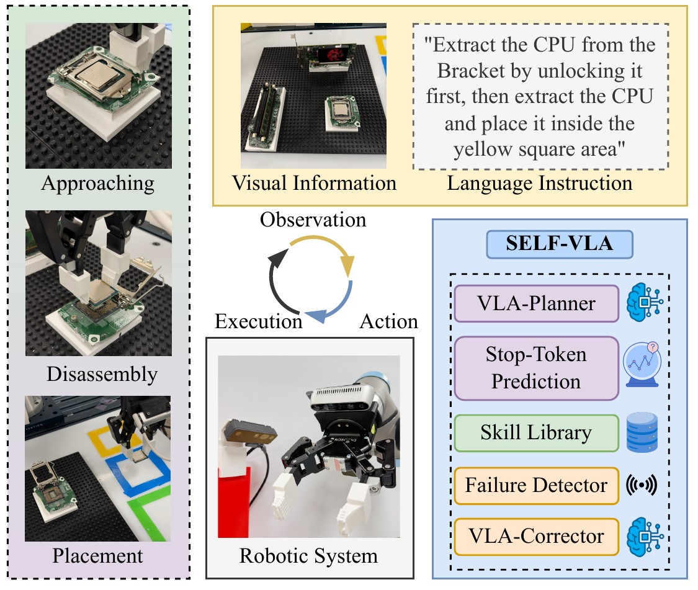
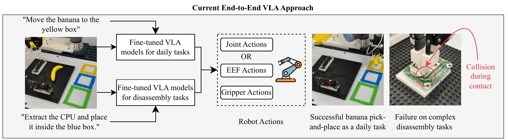

Abstract
Disassembly automation has long been pursued to address the growing demand for efficient and proper recovery of valuable components from end-of-life (EoL) electronic products. Existing approaches have demonstrated promising and regimented performance by decomposing the disassembly process into different subtasks. However, each subtask typically requires extensive data preparation, model training, and system management. Moreover, these approaches are often task- and component-specific, making them poorly suited to handle the variability and uncertainty of EoL products and limiting their generalization capabilities. All these factors restrict the practical deployment of current robotic disassembly systems and leave them highly reliant on human labor. With the recent development of foundation models in robotics, vision-language-action (VLA) models have shown impressive performance on standard robotic manipulation tasks, but their applicability to complex, contact-rich, and long-horizon industrial practices like disassembly, which requires sequential and precise manipulation, remains limited. To address this challenge, we propose SELF-VLA, an agentic framework that combines role-based VLA modules with explicit disassembly skills. SELF-VLA assigns approach and pickup recovery to VLA policies, while programmed skills execute contact-rich disassembly and placement. A stop-token-based handoff mechanism coordinates control transfer between these stages. Across seven component disassembly tasks, SELF-VLA improves full-task success rates by an average of 57.9 percentage points over the corresponding end-to-end policies using OpenVLA-OFT and π0.5.
+57.9 percentage points of full-task success, averaged over seven components and both backbones, against the matching end-to-end policy.
Method
SELF-VLA hands control back and forth between a VLA policy and programmed skills. The VLA approaches and regrasps; the skills execute the contact-rich part. A stop-token handoff decides when each takes over.

Why end-to-end control is not enough
A fine-tuned VLA handles a daily pick-and-place cleanly, then collides on the contact-rich step of a disassembly task. The clip on the right is a real trial of that failure mode.

The same failure, recorded. An end-to-end π0.5 policy reaches the hard drive and lifts the caddy, then loses it before the placement zone. Nothing in the loop notices, so the trial is scored a failure and the arm carries on. 4× speed
How SELF-VLA runs a trial
Nine steps, including the branch taken when the failure detector fires. Step through it, or select any module to read what it does.
Open Figure 2 as published both panels, static
Real-world comparison
One row per component, one clip per cell, all at 4× speed. Counts are full-task successes out of 50 trials. Three cells have both a successful and a failed trial on record; use the switch under the clip to see the other outcome.
Detecting a failure and recovering
When the grasp check fails, the VLA-corrector regrasps the component and the skill resumes the placement sequence instead of aborting the trial.
Quantitative results
Full-task success rate per component, 50 trials per cell. Error bars are 95% Wilson score intervals for a binomial proportion; they describe sampling uncertainty over the 50 trials, not variation across training seeds.